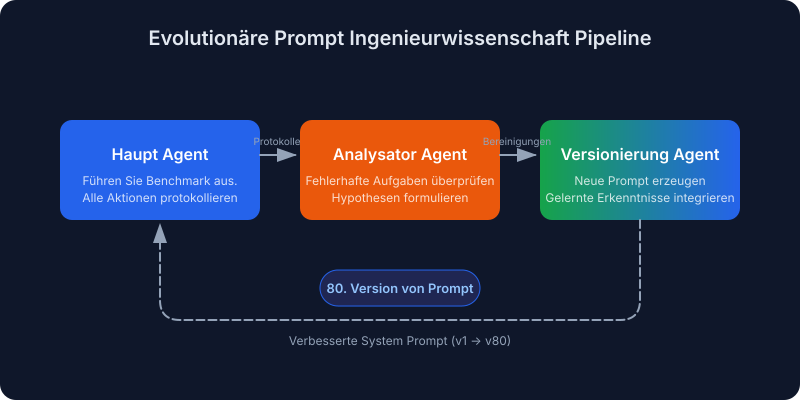
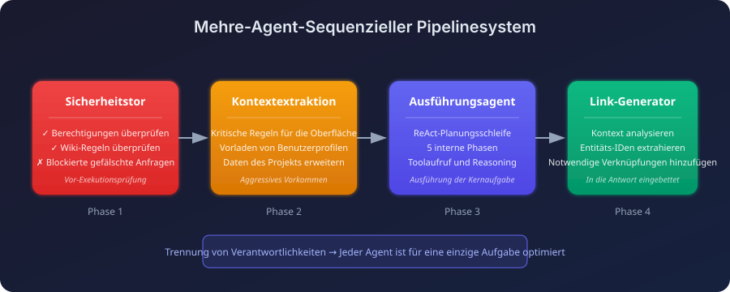
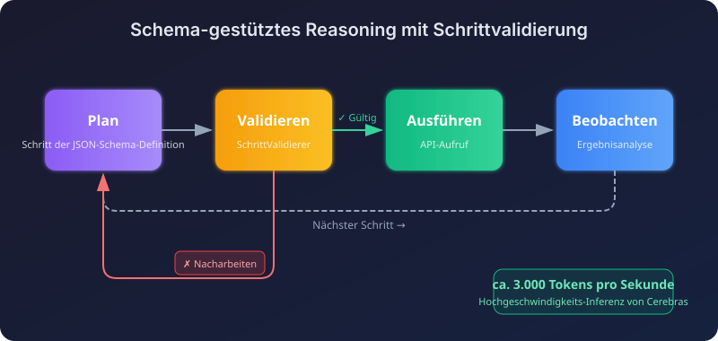
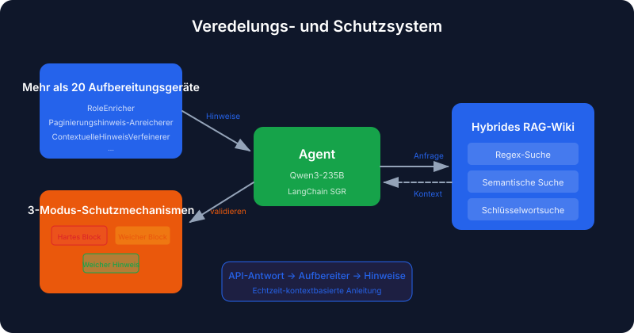
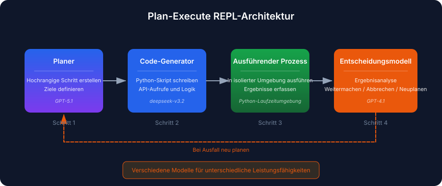
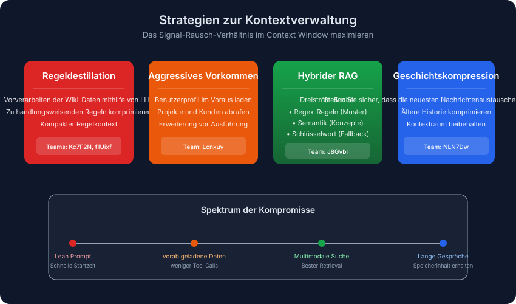
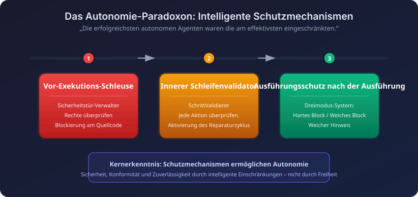

Automatische Übersetzung
Dieser Artikel wurde automatisch aus der englischen Originalversion übersetzt.
Enterprise RAG Challenge 3 (ECR3): Erfolgreiche Architekturen für KI-Agenten
Die Enterprise RAG Challenge 3 (ECR3) ist soeben abgeschlossen. 524 Teams, mehr als 341.000 Ausführungen der Agenten – und lediglich 0,4 % der Teams erreichten eine perfekte Punktzahl. Da die Leaderboard-Tabellen sowie die dazugehörigen Berichte nun öffentlich zugänglich sind, habe ich mir die erfolgreichen Lösungen genauer angeschaut, um herauszufinden, worin sich die besten Teams von den anderen unterschieden haben.
In diesem Beitrag wird erläutert, was ECR3 ist, wie die Aufgaben gestaltet waren, sowie welche Muster in den funktionierenden Architekturen immer wieder zu erkennen waren.
Zusammenfassung: Mehr-Agenten-Pipelines sind den monolithischen Lösungen überlegen. Das führende Team setzte evolutionäres Prompt-Engineering in mehr als 80 automatisierten Iterationen ein. Die Gewinner investierten erhebliche Anstrengungen in Sicherheitsmechanismen (Sicherheitsprüfungen vor der Ausführung, Validatoren während des Laufs sowie Schutzmaßnahmen nach der Ausführung) sowie in Strategien zur Verwaltung von Kontextinformationen. Was in den Kontext aufgenommen wurde, war wichtiger als die Menge selbst.
Was ist die Enterprise RAG Challenge?
Die Enterprise RAG Challenge 3 ist eine groß angelegtes, crowdsourcetes Forschungsprojekt die prüft, wie autonome KI-Agenten komplexe Geschäftsaufgaben bewältigen. Im Gegensatz zu statischen Benchmarks läuft ECR3 auf der Agentic Enterprise Simulation (AGES), einer diskreten-Ereignis-Simulation, die eine realistische Unternehmens-API.
Warum ECR3 wichtig ist
Über AGES arbeiten Agenten innerhalb eines simulierten Unternehmens, das über folgende Komponenten verfügt:
- Mitarbeiterprofile mit spezifischen Fähigkeiten und Abteilungen
- Projekte mit Teamzuordnungen und Kundenbeziehungen
- Unternehmenswiki mit Geschäftsregeln und Berechtigungshierarchien
- Zeitverfolgung sowie finanzielle Prozesse
Jede Aufgabe startet eine eigene Simulation mit frischen Daten, sodass die Agenten nichts zwischen den Ausführungen merken können.
Der Schwierigkeitsbalken
Die Rangliste ist hart:
| Metrik | Wert |
|---|---|
| Registrierte Teams | 524 |
| Gesamte Agent-Ausführungen | 341,000+ |
| Verfügbare Aufgaben | 103 einzigartige Geschäftsaufgaben |
| Perfekter Wert (100,0) | Nur 0,4 % der Teams |
| Ergebnis ≥ 0,9 | Nur 1,1 % der Teams |
Arten von Aufgaben
Die Aufgaben umfassen mehrere Kompetenzbereiche:
- Mehrschrittiges Reasoning: Abgleich der Fähigkeiten der Mitarbeiter mit den Projektzuweisungen
- Genehmigungsvalidierung: Verhinderung unbefugter Änderungen von Gehältern oder Datenzugriffen
- Unklare Abfragen: Handhabung mehrsprachiger sowie umformulierter Benutzeranfragen
- Strenge Ausgabekonformität: Erforderliche Entity-Links müssen in den Antworten enthalten sein.
Was tatsächlich gewonnen hat
Vier Muster tauchten immer wieder an der Spitze der Leaderboard-Liste auf:
- Mehre-Agent-Pipelines sind den monolithischen Agenten überlegen. Die Aufteilung der Aufgabe funktionierte besser als ein großer Agent, der versuchte, alles selbst zu erledigen.
- Die am stärksten autonomen Agenten waren zugleich am stärksten eingeschränkt. Schutzmechanismen wurden nicht erst nachträglich eingeführt.
- Automatisierte Prompt-Entwicklung ist effektiver als manuelle Engineering-Ansätze. Hochwertige Prompts durchliefen mehr als 80 Generationszyklen.
- Die Kontextstrategie leistete den größten Beitrag. Es ging nicht um mehr Kontext, sondern um den richtigen Kontext.
Top-gewinnende Ansätze
Die fünf unten aufgeführten Architekturen bewegen sich in völlig unterschiedlichen Richtungen – von vollautomatisierter Prompt-Entwicklung bis hin zu hybriden Retrieval-Methoden. Jede von ihnen bietet Elemente, die übernommen werden können.
1. Evolutive Prompt-Engineering-Methode (Team VZS9FL / @aostrikov)
Die der ansatz mit den höchsten punkten Automatisierte Prompt-Engineering-Verfahren mittels eines Selbstverbesserungslaufs.

Anstelle der manuellen Anpassung von Prompts entwickelte das Team einen dreieinigen Agenten-Zyklus, der es den Agenten ermöglicht, aus eigenen Fehlern zu lernen.
Dreielement-Pipeline:
| Agent | Rolle |
|---|---|
| Haupt-Agent | Führt den Benchmark aus und protokolliert alle Aktionen sowie Fehler. |
| Analyse-Agent | Überprüft fehlschlagende Aufgaben und formuliert Hypothesen zu den Ursachen. |
| Versionierungs-Agent | Erstellt eine neue Prompt-Version, die die gewonnenen Erkenntnisse einbezieht. |
Das Ergebnis: Der Produktionsprompt war der 80. automatisch generierte Version. Jede Version behebt ein spezifisches Fehlermuster, das in den Protokollen des vorherigen Laufs aufgetreten ist. Die meisten davon gehörten zu jenen Randfällen, die man erst nach stundenlangem Studium eines fehlerhaften Trace-Logs bemerkt.
Stack: claude-opus-4.5 mit dem Anthropic Python SDK sowie die Nutzung nativer Tools.
2. Mehr-Agenten-Sequenzpipelines (Team Lcnxuy / @andrey_aiweapps)
Hier wurde auf den monolithischen Agent verzichtet und stattdessen ein sequenzieller Pipeline aus Spezialisten erstellt, wobei jeder Agent klein genug ist, um tatsächlich in seiner Aufgabe hervorragend zu funktionieren.

Der 4-stufige Pipeline:
- Security Gate Agent: Eine Prüfung vor der Ausführung, die die Berechtigungen anhand der Wiki-Regeln überprüft, bevor der Hauptloop gestartet wird.
- Context Extraction Agent: Extrahiert die relevanten Regeln aus umfangreichen Prompts und lädt vorab Benutzer-, Projekt- sowie Kundendaten hoch.
- Execution Agent: ReAct-basiertes Planen mit 5 internen Phasen (Identität → Bedrohungserkennung → Informationsbeschaffung → Zugriffsvalidierung → Ausführung).
- LinkGeneratorAgent: In das Antwortwerkzeug integriert, analysiert den Kontext, um die erforderlichen Entitätsverknüpfungen einzubeziehen.
Der LinkGenerator-Agent ist der interessante Teil. Er hat ein bestimmtes Problem behoben. die häufigsten Ausfallmuster: Ein Agent, der die richtige Antwort liefert, aber die erforderlichen Referenzlinks vergisst.
Stack: atomic-agents und instructor Frameworks mit GPT-5.1-Codex-Max, GPT-4.1 und Claude-Sonnet-4.5.
3. Schema-gestütztes Reasoning mit Schrittvalidierung (Team NLN7Dw / Ilia Ris)
Dieses Team kombinierte das Schema-gestützte Reasoning mit äußerst schnellen Inferenzprozessen sowie einer Echtzeit-Validierungslogik. Die Strategie bestand darin, dass viele schnelle, validierte Entscheidungen besser sind als eine einzige langsame, sorgfältig überlegte Antwort.

Wichtige Komponenten:
| Komponente | Funktion |
|---|---|
| StepValidator | Jeder vorgeschlagene Schritt wird überprüft. Sollte etwas nicht in Ordnung sein, wird er mit Kommentaren zur Überarbeitung zurückgesendet. |
| Kontextverwaltung | Gesamtplan aus dem vorherigen Schritt sowie komprimierte Historie für ältere Schritte |
| Dynamische Erweiterung | Liest automatisch Benutzerprofile, Projekte und Kundendaten ein; LLM filtert diese, um ausschließlich datenrelevante Informationen für die Aufgaben bereitzustellen. |
| Wrapper für automatische Seitenrückgabe | Alle Listen-Endpunkte liefern automatisch vollständige Ergebnisse. |
Der Geschwindigkeitsvorteil ergibt sich aus dem Betrieb auf Cerebras bei etwa 3.000 Tokens pro Sekunde. Bei diesem Tempo kann der Agent es sich leisten, einen Schritt neu zu überdenken, anstatt sich auf eine langsame erste Antwort eines leistungsschwächeren Modells zu verlassen.
Stack: gpt-oss-120b auf Cerebras, mit einer angepassten Implementierung von SGR NextStep.
4. Verfeinerungs- und Schutzsystem (Team J8Gvbi / @mishka)
Hier wurden auf einer SGR-Basis blockfreie „intelligente Hinweise“ sowie ein stufenweises Schutzsystem integriert. Sobald die API-Antworten eintreffen, prüfen die Verfeinerungskomponenten diese und teilen dem Agenten unauffällig mit, worauf er achten soll.

Das Enrichersystem:
Mehr als 20 Aufbereitungsmodule API-Antworten wurden überprüft und kontextbezogene Hinweise eingefügt:
RoleEnricher: "You are LEAD of this project, proceed with update."
PaginationHintEnricher: "next_offset=5 means MORE results! MUST paginate."
Dreimodus-Schutzsystem:
| Modus | Verhalten |
|---|---|
| Harter Block | Ungültige Aktionen werden dauerhaft blockiert. |
| Weicher Block | Risikoreiche Aktionen werden beim ersten Versuch blockiert, bei erneuter Anmeldung gestattet. |
| Sanfte Hinweis | Leitfaden ohne Blockierung |
Hybride RAG-Wiki: Drei Suchströme (Regex, semantisch, Schlüsselwörter), die parallel laufen, wobei für jede Abfragenart der beste Ergebnisstrom ausgewählt wird.
Stack: qwen/qwen3-235b-a22b-2507 auf dem LangChain SGR-Framework.
5. Plan-execute REPL (Team key_concept_parallel)
Diese Architektur errichtet eine klare Trennung zwischen Planung und Ausführung und nutzt einen kodengenerierenden Schleifenmechanismus. Im Grunde handelt es sich dabei um ein REPL: Der Agent plant einen Schritt, generiert den dazugehörigen Code, führt ihn aus und entscheidet anschließend, was als Nächstes zu tun ist.

Verschiedene Modelle für unterschiedliche Aufgaben: Ein Planer erstellt Pläne, ein Code-Generierungsmodell schreibt Python-Code, und ein kleineres Entscheidungsmodell entscheidet, was nach jedem Schritt unternommen werden soll.
Mehrmodell-Einrichtung:
| Phase | Modell |
|---|---|
| Planung | openai/gpt-5.1 |
| Codegenerierung | deepseek/deepseek-v3.2 |
| Entscheidung nach dem Schritt | openai/gpt-4.1 |
| Endgültige Antwort | openai/gpt-4.1 |
Der REPL zur Abschlussüberprüfung von Schritten:
- Der Planer erstellt einen hochrangigen Schritt.
- Das Code-Generierungsmodell erstellt ein Python-Skript dafür.
- Das Skript wird in einem isolierten Kontext ausgeführt.
- Das Entscheidungsmodell bewertet das Ergebnis und wählt zwischen Fortsetzen, Abbrechen oder Neuplanung aus.
Der Umplanungspfad ist der Ort, an dem dieses Design seine Wirksamkeit zeigt. Wenn ein Schritt teilweise fehlschlägt, kann das Entscheidungsmodell den Rest des Plans neu schreiben, anstatt mit dem fehlerhaften Plan weiterzumachen.
Überall auftretende Muster
Jenseits der einzelnen Architekturen waren einige Gewohnheiten in nahezu allen herausragenden Einreichungen zu finden.
Die Kontextverwaltung erledigte den größten Teil der Arbeit.
Die führenden Teams haben erkannt, dass die Qualität des Kontexts die Obergrenze dafür darstellt, wie gut ein Agent performieren kann.

| Strategie | Ansatz | Am besten geeignet für |
|---|---|---|
| Regeldestillation | Vorverarbeiten des Wikis mithilfe eines LLM zu ~320 Token-Zusammenfassung | Effiziente Prompts, schnelle Startzeit |
| Aggressives Vorausladen | Laden Sie die Benutzer-/Projekt-/Kundendaten vor der Ausführung. | Minimierung der Toolaufrufe |
| Hybrider RAG | Streams für Regex-, semantische sowie Schlüsselwortsuche | Komplexe Suchanforderungen |
| Geschichtskompression | Stellen Sie sicher, dass die neuesten Nachrichtenaustausche vollständig bleiben, und komprimieren Sie die älteren Historieeinträge. | Lange Konversationen |
Kompromiss: Teams Kc7F2N und f1Uixf Es zeigte sich, dass die Qualität des Kontexts wichtiger ist als seine Menge. tatsächlich stellte f1Uixf fest, dass die Komprimierung der Historie die Leistung beeinträchtigte, weshalb sie die vollständige Historie beibehielten und stattdessen auf Modelle mit langem Kontext setzten.

| Typ der Schutzbügel | Wenn | Beispiel |
|---|---|---|
| Vor-Exekutions-Sperren | Vor dem Start der Hauptschleife | Der Security Gate Agent überprüft die Berechtigungen anhand der Wiki-Regeln. |
| In-Loop-Validatoren | Während des Reasonings | StepValidator überprüft jede vorgeschlagene Aktion und löst bei Fehlern eine Nachbearbeitung aus. |
| Nach-Ausführungs-Schutzmechanismen | Vor der endgültigen Einreichung | Das Dreimodus-Schutzsystem überprüft die Vollständigkeit der Antwort. |
Intelligente Tool-Wrapper
Die führenden Teams haben Abstraktionsschichten um die rohe API erstellt:
- Automatische Paginierung: Die Wrapper durchlaufen jede Seite nacheinander und liefern den vollständigen Datensatz zurück.
- Fuzzy Normalisierung: „Bereitschaft zur Reise“ wird wie folgt übersetzt:
will_travelAPI-Feld. - Spezialisierte Reasoning-Tools:
think,plan, undcriticWerkzeuge für kontrollierte Abwägung.
Häufige Fehlermuster und wie die Gewinner sie behoben haben
Selbst die besten Agenten wiesen dieselben Blindstellen auf. Die Lösungen waren strukturell angelegt und nicht lediglich Anpassungen der Prompte:
| Fehlermodus | Beschreibung | Architektonische Korrektur |
|---|---|---|
| Genehmigungsumgehung | Eingeschränkte Aktionen ausführen, ohne die Benutzerberechtigungen zu überprüfen | Vor-Exekutions-Sicherheitsgate-Agent; verpflichtende Abfolge: Identität → Berechtigungen → Ausführung |
| Fehlende Entitätsverknüpfungen | Die Antwort ist korrekt, enthält jedoch die erforderlichen Referenzlinks nicht. | Embedded LinkGeneratorAgent im Antwortwerkzeug |
| Ausführung der Paginierung | Nur die erste Seite der Ergebnisliste verarbeiten | Auto-Paginierungs-Wrapper für alle Liste-Endpunkte |
| Schleifen zur Aufrufung von Tools | Immer wieder feststecken, wenn man denselben Tool mit geringfügigen Variationen aufruft. | Einschränkungen bei der Umwandlung; auf das Reasoning fokussierte Modelle (Qwen3) |
| Kontextüberlastung | Erfüllen des Kontexts mit irrelevanten Wiki-Abschnitten | Regeldestillation; dynamisches Kontextfiltern |
Was man mitnehmen sollte
Falls Sie Agenten entwickeln und dieses anwenden möchten:
- Verwenden Sie mehrere Agenten-Pipelines. Monolithische Agenten sind hier ungeeignet. Spitzenteams setzten 3 bis 5 Spezialisten ein für Sicherheit, Kontextextraktion, Planung und Ausführung.
- Automatisieren Sie die Prompt-Iteration. Der erfolgreiche Prompt war die Version 80. Durch Schleifen lassen sich Fehlermuster aufdecken, die man sonst niemals erkennen würde.
- Investieren Sie echte Anstrengungen in Sicherheitsmechanismen. Vorab-Sicherheitsprüfungen, während der Ausführung wirkende Kritikerfunktionen sowie Nachausführungs-Schutzmaßnahmen sind unverzichtbar. Gerade die scheinbar autonomesten Agenten waren am stärksten eingeschränkt.
- Kapseln Sie Ihre Tools ein. Paginierung, Datenvervollständigung und fernes Suchen gehören in spezielle Wrapper. Ein Team entwickelte mehr als 20 solcher Vervollständiger, die API-Antworten in Echtzeit überwachten.
- Gehen Sie die Kontextstrategie ernst. Regeldistillation (Zusammenfassungen von etwa 320 Token), Vorauladung sowie dynamisches Filtern sind entscheidend. Auch Geschwindigkeit spielt eine Rolle – ein Team arbeitete mit etwa 3.000 Token pro Sekunde, sodass es sich leisten konnte, häufig neu zu planen.
Wichtige Erkenntnisse
- Die leistungsfähigsten ECR3-Systeme betrachteten RAG als einen Agenten-Arbeitsablauf und nicht lediglich als eine einzige Abfragemethode.
- Erfolgreiche Ansätze trennten Analyse, Überarbeitung und Überprüfung in klare Schritte voneinander.
- Speicher und Prompt-Iteration waren wichtig, da sich die Leistung der Agenten bei wiederholten Versuchen verbesserte.
- Eine strukturierte Bewertungsmethode machte den Unterschied zwischen beeindruckenden Demonstrationen und zuverlässigem autonomen Verhalten aus.